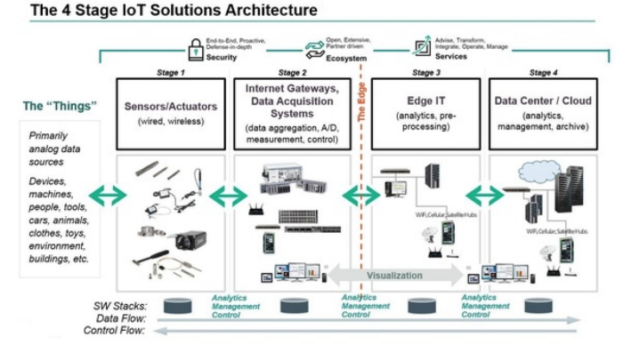
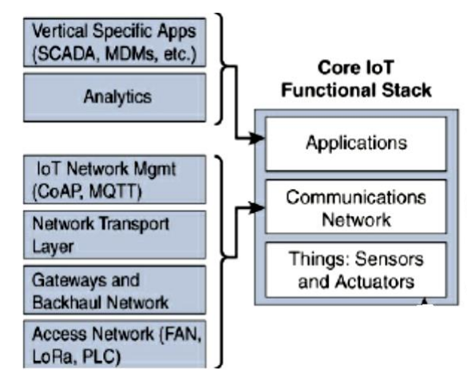
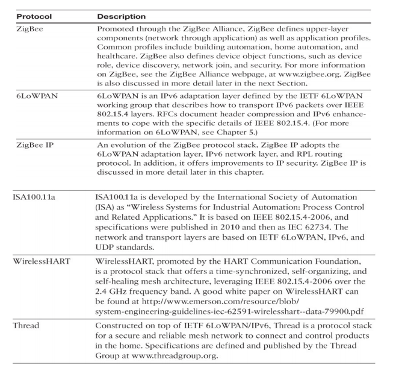
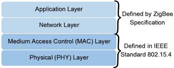
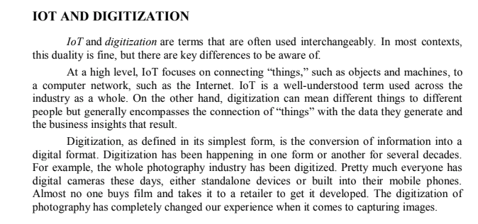

Module 1
IoT Security
- DOS(Denial of service)
- DDOS(Distributed denial of service)
- Information manipulation
- Unauthorized access
- Information disclosure
Video -
IoT security problems
IoT Challenges
- Scale
- Security
- Privacy
- Big data and data analytics
- Interoperabitlity
- Power
- Storage
Video -
IoT challenges
IoT Architecture
3 IoT Architecture layers:
- The client side(IoT device layer)
- Operators on the server side(IoT getaway layer)
-
The pathway that connects the client and the operators(IoT platform
layer)
4 stage IoT Architecture:
- Sensors and Actuators
- Internet gateways and data acquisition systems
- Edge IT
- Data Center and Cloud

Article 1 -
IoT Architecture
Article 2 -
IoT Architecture
Core IoT functional stack
In general, an IoT stack consists of four items:
- Devices (things)
- Gateways
- IoT platforms
- Applications

Article -
IoT stack/layers
IoT Sensors
In many cases, sensors are useful and very important for the devices in
order to fetch the data. The data can be real-time, which includes the
current temperature, pressure or humidity. It can also sense the objects
and calculate the distance between them. For each purpose, there are
sensors available in the market. Sensors and their applications can be
used in many IoT projects/systems.
Most commonly used IoT sensors are:
- Temperature Sensor
- Pressure Sensor
- Proximity Sensor
- Accelerometer and Gyroscope Sensor
- IR Sensor
- Optical Sensor
- Gas Sensor
- Smoke Sensor
Article -
IoT sensors
802.15.4 Protocol stack utilization
Protocols
- Zigbee
- 6LoWPAN
- ZigBee IP
- ISA 100.1a
- Wireless HART
- Thread


Video -
802.15.4 standard and summary at 10:00
IoT Impact in Real World
About 14 billion i.e 0.06% of "things" are connected to the internet
today.
CISCO predicts in 2020, it may go upto 50 billion and this new connection
will lead to $19 trillion dollar in project and cost savings.
According to UK govt, 100 billion objects may be connected.
Managing and monitoring smart objects using real time connectivity enables
a new level of data driven decision making.
All these results in optimization of systems and processes delivers new
services that saves time for both people and business while improving the
overall quality of life.
IoT provides the ability to connect living things to the internet.
Sensors can be placed on animals and insects.
IoT enables roaches to save lives in disaster struck areas and situations.
SANET
A sensor/actuator network (SANET) is a network of sensors that measure and
sense their environment and/or actuators that acts on their environemnt.
[ Write about sensors/actutaors ]
Advantages and Disadvantages of Wireless Based Solutions
Advantages
-
Greater deployment flexibility(especially in extreme environments and
hard to reach places)
- Simpler scaling to a large number of nodes
- Lower implementation costs
- Ensures long term maintenance
- Effortless introduction of new sensors/actuators nodes
- Better equipped to handle dynamic/rapid topological changes
Disadvantages
- Potentially less secure
- Typically lower transmission speeds
- Greater level of impact/influence by environment
IoT and Digitization

IoT and Genesis of IoT